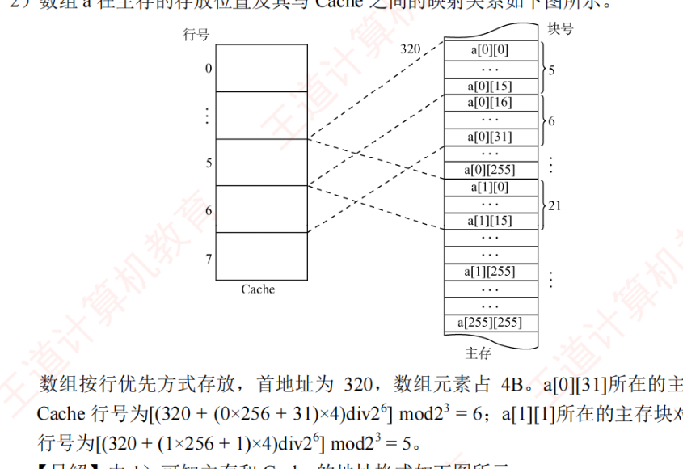
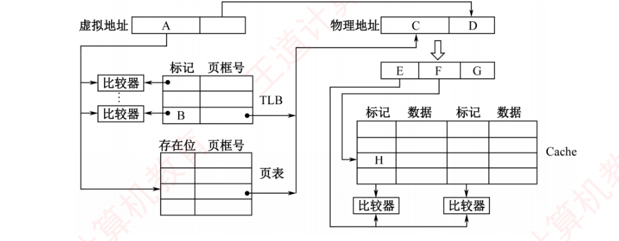
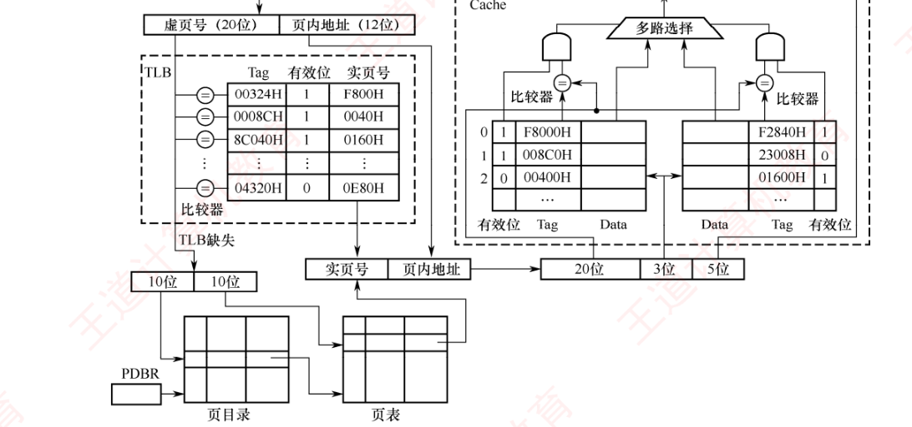

第3章 习题精选
本页共 36 题：选择题 26 道（第 1～3 题出自 3.1 存储器概述，第 4～8 题出自 3.2 主存储器，第 9～12 题出自 3.3 主存储器与 CPU 的连接，第 13～15 题出自 3.4 外部存储器，第 16～22 题出自 3.5 高速缓冲存储器，第 23～26 题出自 3.6 虚拟存储器），综合题 10 道（第 27～36 题，以计算为主）。题干【 】内为做题本出处；收录 2009/2010/2013/2015/2016/2017/2018/2022/2024 年统考真题共 15 道；选择题答案除速查网格缺失的 1 题外，均与《选择题【答案速查】》网格逐题核对过，缺项按教材解析作答。
一、选择题（第1～26题）
第1题【3.1·P81】磁盘属于（ ）类型的存储器。
答案与解析
答案：D
磁盘访问时先直接指向整个磁道（寻道），再在磁道内顺序查找扇区，兼具直接定位与顺序存取两步，故属于直接存取存储器（DAM），选 D。它既不是按地址随机访问的 RAM（访问时间与位置无关），也不是纯按顺序扫描的磁带类 SAM。
第2题【3.1·P81】相联存储器是一种特殊的存储器，其主要特点是（ ）
答案与解析
答案：C
相联存储器按内容寻址：给定关键字的各位与所有存储单元同时并行比较，命中者输出，因此查找速度快，选 C。A 是普通按地址访问的存储器；B 是栈的规则；D 错，相联存储器正是用于实现 Cache（组相联/全相联）的标记比较与 TLB 快表等场合，并非只用于直接映射（直接映射每行只有唯一位置，反而无需相联比较）。
第3题【3.1·P81】在多级存储体系中，“Cache - 主存”结构的作用是解决（ ）的问题。
答案与解析
答案：D
“Cache - 主存”层次解决主存与 CPU 速度不匹配的问题（速度目标），选 D；“主存 - 辅存”层次（由操作系统与硬件共同构成虚拟存储器）解决主存容量不足的问题（容量目标）。两层对应关系不要混淆：速度配 Cache，容量配虚存。
第4题【3.2·P92】DRAM 的刷新是以（ ）为单位的。
答案与解析
答案：B
DRAM 采用电容存储电荷，需定期再生。刷新按行进行：每次刷新操作对一行上所有存储单元同时再生，刷新计数器逐行递增，选 B。按行刷新使得刷新次数 = 行数（而非单元数/字数），刷新开销与行数成正比，这也是 2018 真题“行列数选择”考点的基础。
第5题【3.2·P92】某一 DRAM 芯片，采用地址复用技术，容量为 1024×8 位，该芯片的地址引脚和数据引脚总数至少是（ ）
答案与解析
答案：B
① \(1024 = 2^{10}\)，共需 10 位地址；② DRAM 采用地址复用，行、列地址分先后两次经同一组引脚送入，地址引脚 = \(10 \div 2 = 5\) 根；③ 数据引脚 = 8 根；④ 总数 = \(5 + 8 = 13\) 根，选 B。（对比：若不复用（如 SRAM），地址引脚为 10 根，总数 18 根；DRAM 复用后地址线减半是常考陷阱。）
（注：本题为速查网格 3.2 节的缺失位次——该网格自第 9 格起整体错位、未收录教材 3.2 单选 09 的答案；本题答案以教材解析为准，为 B、13 根。）
第6题【3.2·P93】已知单个存储体的存储周期为 110ns，总线传输周期为 10ns，采用低位交叉编址的多模块存储器时，存储体数应（ ）
答案与解析
答案：D
低位交叉存储器保证流水线不断流（取遍所有模块后第一个模块又能开始新访问）的条件是：
\( m \ge \dfrac{T}{r} = \dfrac{110\,\text{ns}}{10\,\text{ns}} = 11 \)。
即存储体数应大于或等于 11（\(T\) 为存储周期，\(r\) 为总线传输周期），选 D。若 \(m < T/r\)，流水访问中上一轮尚未结束就要启动同一模块，产生访存冲突。
第7题【3.2·P94】某机器采用四体低位交叉存储器，现分别执行下述操作：① 读取 6 个连续地址单元中存放的存储字，重复 80 次；② 读取 8 个连续地址单元中存放的存储字，重复 60 次。则①、②所花费的时间之比为（ ）
答案与解析
答案：C
四体交叉方式下，一个存储周期 \(T\)（= 4 个总线周期）内可流水读出 4 个连续字，故读 \(n\) 个连续字所需存储周期数为 \( \lceil n/4 \rceil \)。
① 每轮读 6 个字：\( \lceil 6/4 \rceil = 2 \) 个存储周期，80 次共 \(80 \times 2 = 160\) 个存储周期；
② 每轮读 8 个字：\( \lceil 8/4 \rceil = 2 \) 个存储周期，60 次共 \(60 \times 2 = 120\) 个存储周期；
时间之比 = \(160 : 120 = 4 : 3\)，选 C。
（注：「\(\lceil n/4 \rceil\) 个存储周期」是简化口径。按教材解析的精确口径，每轮读 \(n\) 个字耗时 \((n-1)\,T/4 + T\)：6 字一轮 \(2.25T\)、8 字一轮 \(2.75T\)，总时间之比 \(160.25T : 120.75T\)，同样约 \(4:3\)，答案不变。）
第8题【3.2·P95·2015 统考真题】某计算机使用四体交叉编址存储器，假定在存储器总线上出现的主存地址（十进制）序列为 8005, 8006, 8007, 8008, 8001, 8002, 8003, 8004, 8000，则可能发生访存冲突的地址对是（ ）
答案与解析
答案：D
① 体号 = 地址 mod 4：8005→1，8006→2，8007→3，8008→0，8001→1，8002→2，8003→3，8004→0，8000→0。② 按访问次序，第 4 次访问 8008（体0）、第 8 次访问 8004（体0）、第 9 次访问 8000（体0）。③ 存储周期 = 4 个总线周期：8008 占用第 4～7 个总线周期，第 8 个周期访问 8004 时体 0 刚空闲，不冲突；而 8004 占用第 8～11 个周期，第 9 个周期再访 8000 时体 0 正忙，发生冲突，选 D。（判断规则：同一存储体在相邻不足一个存储周期的两次访问中出现，即冲突。）
第9题【3.3·P100】用存储容量为 16K×1 位的存储器芯片来组成一个 64K×8 位的存储器，则在字方向和位方向分别扩展了（ ）倍。
答案与解析
答案：D
字方向（容量单元数）：\(64\text{K} \div 16\text{K} = 4\) 倍；位方向（单元宽度）：\(8 \div 1 = 8\) 倍。故字方向扩展 4 倍、位方向扩展 8 倍，选 D。所需芯片总数 = \(4 \times 8 = 32\) 片（每 8 片位扩展成一组 16K×8 位，共 4 组字扩展）。
第10题【3.3·P101】设 CPU 地址总线有 24 根，数据总线有 32 根，用 512K×8 位的 RAM 芯片构成该机的主存储器，则该机主存最多需要（ ）片这样的存储芯片。
答案与解析
答案：D
① 主存空间 = \(2^{24}\) 字 × 32 位 = 16M×32 位；② 字方向：\(16\text{M} \div 512\text{K} = 32\) 组；③ 位方向：\(32 \div 8 = 4\) 片/组；④ 总片数 = \(32 \times 4 = 128\) 片，选 D。
第11题【3.3·P101·2009 统考真题】某计算机主存容量为 64KB，其中 ROM 区为 4KB，其余为 RAM 区，按字节编址。现要用 2K×8 位的 ROM 芯片和 4K×4 位的 RAM 芯片来设计该存储器，需要上述规格的 ROM 芯片数和 RAM 芯片数分别是（ ）
答案与解析
答案：D
① ROM 区：\(4\text{KB} \div 2\text{K} \times (8 \div 8) = 2\) 片（2K×8 位芯片宽度已够，仅字扩展）；② RAM 区：\(64 - 4 = 60\text{KB}\)，芯片数 = \((60\text{K} \div 4\text{K}) \times (8 \div 4) = 15 \times 2 = 30\) 片（字、位同时扩展）；③ ROM 2 片、RAM 30 片，选 D。
第12题【3.3·P101·2016 统考真题】某存储器容量为 64KB，按字节编址，地址 4000H~5FFFH 为 ROM 区，其余为 RAM 区。若采用 8K×4 位的 SRAM 芯片进行设计，则需要该芯片的数量是（ ）
答案与解析
答案：C
① ROM 区大小 = \(5\text{FFFH} - 4000\text{H} + 1 = 2000\text{H} = 8\text{KB}\)；② RAM 区 = \(64 - 8 = 56\text{KB}\)（ROM 区不用 SRAM 芯片）；③ SRAM 芯片数 = \((56\text{K} \div 8\text{K}) \times (8 \div 4) = 7 \times 2 = 14\) 片，选 C。
第13题【3.4·P107】若磁盘的转速提高一倍，则（ ）
答案与解析
答案：C
平均旋转延迟 = 转半圈的时间 = \( \dfrac{1}{2} \times \dfrac{60}{\text{转速}} \)，转速提高一倍则其减少一半，选 C。寻道时间是磁头径向机械运动，与转速无关，A 错；传输速率（位密度×线速度）随转速提高而提高，但存取时间还有寻道等分量，并非整体翻倍，B、D 错。
第14题【3.4·P108】一个磁盘的转速为 7200 转/分，每个磁道有 160 个扇区，每个扇区有 512 字节，则在理想情况下，磁盘每秒传输的数据量是（ ）
答案与解析
答案：C
① 转速 = \(7200 \div 60 = 120\) 转/秒；② 每转读出一整道 = \(160 \times 512\text{B} = 80\text{KB}\)；③ 数据传输率 = \(120 \times 80\text{KB/s} = 9600\text{KB/s}\)，选 C。（理想情况即连续读、忽略寻道与旋转延迟。）
第15题【3.4·P108·2013 统考真题】某磁盘的转速为 10000 转/分，平均寻道时间是 6ms，磁盘传输速率是 20MB/s，磁盘控制器延迟为 0.2ms，读取一个 4KB 的扇区所需的平均时间约为（ ）
答案与解析
答案：B
逐项相加：
① 转一圈时间 = \(60 \div 10000\,\text{s} = 6\,\text{ms}\)，平均旋转延迟 = \(6 \div 2 = 3\,\text{ms}\)；
② 平均寻道时间 = 6ms；
③ 传输 4KB：\(4\text{KB} \div 20\text{MB/s} = 0.2\,\text{ms}\)；
④ 控制器延迟 = 0.2ms；
总时间 = \(6 + 3 + 0.2 + 0.2 = 9.4\,\text{ms}\)，选 B。
第16题【3.5·P123】假定用作 Cache 的 SRAM 的存取时间为 2ns，用作主存的 SDRAM 的存取时间为 40ns。为使存储系统的平均存取时间达到 3ns，则 Cache 命中率应达到（ ）左右。
答案与解析
答案：C
设命中率为 \(h\)，平均存取时间 = \(h \times 2 + (1-h) \times 40 = 3\)，解得 \(40 - 38h = 3\)，\(h = 37/38 \approx 97.4\%\)，约 97.5%，选 C。
第17题【3.5·P123】在不同的情况下，需要采用适合的 Cache 写策略。对于下面两种情况：① 主要运行访问密集型应用，其中包含写操作；② 安全性要求很高，不允许有任何数据不一致的情况发生。适合它们的写策略分别是（ ）
答案与解析
答案：A
① 访问密集、写操作频繁时，若每次写都直达主存会拖慢速度，宜用回写法（只写 Cache 并置脏位，换出时才写回主存，减少主存写次数）；② 安全性要求高、不允许不一致时，宜用全写法（写命中时同时写入 Cache 和主存，主存内容始终最新）。故为“回写法， 全写法”，选 A。
第18题【3.5·P123】假设 Cache 采用 2 路组相联映射方式，Cache 共有 4 行（分为 2 组，每组 2 行），Cache 每行可存放一个主存块。组内采用 LRU 算法进行替换。给定主存块访问序列为 1, 8, 1, 7, 8, 2, 7, 2, 1, 8, 3, 8, 2, 1, 3, 1, 7, 1, 3, 7，若 Cache 初始为空，则该访问序列的 Cache 缺失率为（ ）
答案与解析
答案：C
组号 = 块号 mod 2（偶数块→组 0，奇数块→组 1），组内 LRU。逐步模拟（“缺”为缺失，“中”为命中）：
| 次序 | 1 | 2 | 3 | 4 | 5 | 6 | 7 | 8 | 9 | 10 |
|---|---|---|---|---|---|---|---|---|---|---|
| 块号 | 1 | 8 | 1 | 7 | 8 | 2 | 7 | 2 | 1 | 8 |
| 组号 | 1 | 0 | 1 | 1 | 0 | 0 | 1 | 0 | 1 | 0 |
| 结果 | 缺 | 缺 | 中 | 缺 | 中 | 缺 | 中 | 中 | 中 | 中 |
| 次序 | 11 | 12 | 13 | 14 | 15 | 16 | 17 | 18 | 19 | 20 |
|---|---|---|---|---|---|---|---|---|---|---|
| 块号 | 3 | 8 | 2 | 1 | 3 | 1 | 7 | 1 | 3 | 7 |
| 组号 | 1 | 0 | 0 | 1 | 1 | 1 | 1 | 1 | 1 | 1 |
| 结果 | 缺 | 中 | 中 | 中 | 中 | 中 | 缺 | 中 | 缺 | 缺 |
关键替换点：第 11 次块 3 调入组 1，LRU 淘汰 7；第 17 次块 7 调入，淘汰 3；第 19 次块 3 调入，淘汰 7；第 20 次块 7 调入，淘汰 1。共缺失 8 次，缺失率 = \(8 \div 20 = 40\%\)，选 C。
第19题【3.5·P124】有效容量为 128KB 的 Cache，每块 16B，采用 8 路组相联。字节地址为 1234567H 的单元调入该 Cache，则其标记位字段应为（ ）
答案与解析
答案：C
① 组数 = \(128\text{KB} \div 16\text{B} \div 8 = 1024\) 组 → 组号占 10 位；② 块内地址占 4 位（16B）；③ 32 位地址中标记 = \(32 - 10 - 4 = 18\) 位（核对：18+10+4 = 32 ✓）；④ 标记 = 地址高 18 位 = \(1234567\text{H} \gg 14\) 位 = 右移 14 位：0001 0010 0011 0100 0101 0110 0111B 去掉低 14 位（00 0101 0110 0111B）得 00 0100 1000 1101B = 048DH，选 C。
第20题【3.5·P125·2009 统考真题】某计算机的 Cache 共有 16 块，采用 2 路组相联映射方式（即每组 2 块）。每个主存块大小为 32B，按字节编址。主存 129 号单元所在主存块应装入的 Cache 组号是（ ）
答案与解析
答案：C
① 主存块号 = \( \lfloor 129 \div 32 \rfloor = 4\)；② 组数 = \(16 \div 2 = 8\) 组；③ 组号 = 块号 mod 组数 = \(4 \bmod 8 = 4\)，选 C。
第21题【3.5·P126·2015 统考真题】假定主存地址为 32 位，按字节编址，主存和 Cache 之间采用直接映射方式，主存块大小为 4 个字，每字 32 位，采用回写方式，则能存放 4K 字数据的 Cache 的总容量的位数至少是（ ）
答案与解析
答案：C
① 块大小 = 4字×4B = 16B → 块内地址 4 位；② Cache 行数 = \(4\text{K字} \div 4\text{字} = 1024\) 行 → 行号 10 位；③ 标记 = \(32 - 10 - 4 = 18\) 位（核对 18+10+4 = 32 ✓）；④ 回写方式每行需 1 位有效位 + 1 位脏位；⑤ 每行位数 = 数据 \(16\text{B} \times 8 = 128\) + 标记 18 + 有效 1 + 脏 1 = 148 位；⑥ 总容量 = \(1024 \times 148\) 位 = 148K 位，选 C。
第22题【3.5·P126·2017 统考真题】某 C 语言程序段如下：
for(i=0; i<=9; i++){
temp=1;
for(j=0; j<=i; j++) temp*=a[j];
sum+=temp;
}
下列关于数组 a 的访问局部性的描述中，正确的是（ ）
答案与解析
答案：A
内层循环对 a[0]~a[i] 顺序连续访问，具有空间局部性；外层每轮 i 又从 a[0] 开始重复访问刚访问过的数组元素（a[0] 被访问 10 次），具有时间局部性。二者皆有，选 A。
第23题【3.6·P142·2010 统考真题】下列命令组合的一次访存过程中，不可能发生的是（ ）
答案与解析
答案：D
TLB 命中说明该页的页表项在快表中，该页必定已调入主存，Page 不可能未命中（缺页），D 不可能发生。A、B、C 均可能：TLB 未命中仍可查页表成功（Page 命中）；Cache 与 TLB、页表相互独立，Cache 未命中不妨碍 Page 命中。
第24题【3.6·P142·2013 统考真题】某计算机主存地址空间大小为 256MB，按字节编址。虚拟地址空间大小为 4GB，采用页式存储管理，页面大小为 4KB，TLB（快表）采用全相联映射，有 4 个页表项，内容如下表所示。
| 有效位 | 标记 | 页框号 | … |
|---|---|---|---|
| 0 | FF180H | 0002H | … |
| 1 | 3FFF1H | 0035H | … |
| 0 | 02FF3H | 0351H | … |
| 1 | 03FFFH | 0153H | … |
则对虚拟地址 03FF F180H 进行虚实地址变换的结果是（ ）
答案与解析
答案：A
① 页大小 4KB → 页内偏移 12 位：虚拟地址 03FF F180H 的页内偏移 = 180H；② 虚页号（TLB 标记）= \(03\text{FFF}180\text{H} \gg 12\) = 03FFFH；③ 全相联查找 TLB：第 4 项标记 03FFFH 且有效位 = 1，命中，页框号 0153H；④ 物理地址 = 页框号拼接页内偏移 = \(0153\text{H} \times 1000\text{H} + 180\text{H}\) = 015 3180H，选 A。
第25题【3.6·P142·2022 统考真题】某计算机主存地址为 24 位，采用分页虚拟存储管理方式，虚拟地址空间大小为 4GB，页大小为 4KB，按字节编址。当 CPU 访问虚拟地址 0008 2840H 时，虚-实地址转换的结果是（ ）
| 虚页号 | 实页号 (页框号) | 存在位 |
|---|---|---|
| 82 | 024H | 0 |
| … | … | … |
| 129 | 180H | 1 |
| 130 | 018H | 1 |
答案与解析
答案：C
① 页 4KB → 页内偏移 12 位：0008 2840H 的页内偏移 = 840H；② 虚页号 = \(0008\,2840\text{H} \gg 12\) = 00082H = 十进制 130；③ 查页表：虚页 130 的实页号 = 018H、存在位 = 1（在主存，不缺页）；④ 物理地址 = \(018\text{H} \times 1000\text{H} + 840\text{H}\) = 01 8840H，选 C。
第26题【3.6·P143·2024 统考真题】某计算机按字节编址，采用页式虚拟存储管理方式，虚拟地址为 32 位，主存地址为 30 位，页大小为 1KB。若 TLB 共有 32 个表项，采用 4 路组相联映射方式，则 TLB 表项中标记字段的位数至少是（ ）
答案与解析
答案：C
① 页大小 1KB = \(2^{10}\)B → 页内地址 10 位，虚页号 = \(32 - 10 = 22\) 位；② TLB 32 项、4 路组相联 → 组数 = \(32 \div 4 = 8 = 2^3\)，组号占 3 位；③ TLB 标记 = 虚页号高位部分 = \(22 - 3 = 19\) 位（核对 19+3+10 = 32 ✓），至少 19 位，选 C。
二、综合题（第27～36题）
第27题【3.2·P96】设存储器容量为 32 个字，字长为 64 位，模块数 \(m = 4\)，分别采用顺序方式和交叉方式进行组织。存取周期 \(T = 200\text{ns}\)，数据总线宽度为 64 位，总线传输周期 \(r = 50\text{ns}\)。在连续读出 4 个字的情况下，求顺序存储器和交叉存储器各自的带宽。
答案与解析
-
读出的信息量相同：\(q = 64\) 位 × 4 = 256 位。
-
顺序方式：逐体串行访问，读出 4 个字需 \(t_1 = mT = 4 \times 200\,\text{ns} = 800\,\text{ns} = 8\times10^{-7}\,\text{s}\)。
带宽 \(W_1 = q / t_1 = 256 \div (8\times10^{-7}\,\text{s}) = 32\times10^{7}\,\text{b/s}\)。 -
交叉方式：四体流水访问，第 1 个字经一个完整存储周期 \(T\) 读出，此后每隔一个总线周期 \(r\) 增加一个字，故 \(t_2 = T + (m-1)r = 200 + 3\times50 = 350\,\text{ns} = 3.5\times10^{-7}\,\text{s}\)。
带宽 \(W_2 = q / t_2 = 256 \div (3.5\times10^{-7}\,\text{s}) \approx 73\times10^{7}\,\text{b/s}\)。交叉方式的带宽约为顺序方式的 \(73/32 \approx 2.3\) 倍。流水时间关系如下图所示（每体错开一个总线周期启动）：

低位交叉存储器的流水访问（教材图3.10）：\(T+(m-1)r\) 内连续读出 \(m\) 个字
第28题【3.3·P102】用一个 512K×8 位的 Flash 存储芯片组成一个 4M×32 位的半导体只读存储器，存储器按字编址，试回答以下问题：
- 该存储器的数据线数和地址线数分别为多少？
- 共需要几片这样的存储芯片？
- 说明每根地址线的作用。
答案与解析
-
数据线数 = 字长 = 32 根；按字编址，单元数 = 4M = \(2^{22}\)，地址线数 = \(22\) 根。
-
芯片数 = 字方向 × 位方向 = \( \dfrac{4\text{M}}{512\text{K}} \times \dfrac{32}{8} = 8 \times 4 = \mathbf{32} \) 片。
即每 4 片 512K×8 位并联做位扩展，组成一组 512K×32 位；共 8 组做字扩展。 -
片内地址 512K = \(2^{19}\)，故：
① 低 19 位地址线 \(A_{18} \sim A_{0}\)：片内地址线，并行接到每组内 4 片芯片的地址引脚，选中片内 512K 个字单元之一；
② 高 3 位地址线 \(A_{21} \sim A_{19}\)：片选地址线，经 3-8 译码器译码产生 8 个片选信号，每次选中 8 组中的一组（同时选中组内 4 片），其余组不工作。
第29题【3.4·P108】某个硬磁盘共有 4 个记录面，存储区域内半径为 10cm，外半径为 15.5cm，道密度为 60 道/cm，外层位密度为 600bit/cm，转速为 6000 转/分。
- 硬磁盘的磁道总数是多少？
- 硬磁盘的容量是多少？
- 将长度超过一个磁道容量的文件记录在同一个柱面上是否合理？
- 若采用定长数据块记录格式，则直接寻址的最小单位是什么？寻址命令中磁盘地址如何表示？
- 假定每个扇区的容量为 512B，每个磁道有 12 个扇区，寻道的平均等待时间为 10.5ms，试计算磁盘平均存取一个扇区的时间。
答案与解析
-
有效存储区域宽度 = \(15.5 - 10 = 5.5\,\text{cm}\)，每面磁道数 = \(60 \times 5.5 = 330\) 道/面；4 个记录面共 \(330 \times 4 = \mathbf{1320}\) 个磁道。
-
外层磁道周长 = \(2\pi R = 2 \times 3.14 \times 15.5 = 97.34\,\text{cm}\)；
每道信息量 = \(600\,\text{bit/cm} \times 97.34\,\text{cm} = 58404\,\text{bit} = 7300\,\text{B}\)；
非格式化容量 = \(7300\,\text{B} \times 1320 = \mathbf{9\,636\,000\,B}\)（约 9.19MB）。 -
合理。同一柱面上各记录面的磁道半径相同，切换记录面只需电子开关选择磁头，不需要重新寻道，数据读/写速度快；只有跨柱面时才需要移动磁头。
-
定长数据块格式下每个扇区记录固定字节数的信息，直接寻址的最小单位是一个扇区。磁盘地址由驱动器号、柱面号（磁道号）、盘面号、扇区号四部分表示。
-
平均存取时间 = 平均寻道时间 + 平均旋转延迟 + 扇区传输时间：
① 平均寻道 = 10.5ms；
② 转速 6000 转/分 → 转一圈 \(60\,000\,\text{ms} \div 6000 = 10\,\text{ms}\)，平均旋转延迟 = 转半圈 = \(10 \div 2 = 5\,\text{ms}\)；
③ 每磁道 12 个扇区，扫过一个扇区（传输）= \(10\,\text{ms} \div 12 \approx 0.83\,\text{ms}\)；
合计 = \(10.5 + 5 + 0.83 \approx \mathbf{16.3\,ms}\)。
第30题【3.5·P127】某计算机的主存地址位数为 32 位，按字节编址。假定数据 Cache 中最多存放 128 个主存块，采用 4 路组相联方式，块大小为 64B，每块设置 1 位有效位。采用随机替换算法，写磁盘采用回写策略，为此每块设置了 1 位“脏”位。要求：
- 分别指出主存地址中标记 (Tag)、组号 (Index) 和块内地址 (Offset) 三部分的位置与位数。
- 计算该数据 Cache 的总位数。
答案与解析
-
① 块大小 64B = \(2^{6}\)B → 块内地址 Offset 占低 6 位（\(A_{5} \sim A_{0}\)）；
② 组数 = \(128 \div 4 = 32 = 2^{5}\) → 组号 Index 占中间 5 位（\(A_{9} \sim A_{5}\)）；
③ 标记 Tag 占高 21 位（\(A_{31} \sim A_{10}\)）。
核对：\(21 + 5 + 6 = 32\) 位 ✓。 -
每行（每块）位数 = 数据位 + 标记位 + 有效位 + 脏位 = \(64 \times 8 + 21 + 1 + 1 = 535\) 位；
Cache 共 128 行，总位数 = \(128 \times 535 = \mathbf{68\,480}\) 位。
第31题【3.5·P128·2010 统考真题】某计算机的主存地址空间大小为 256MB，按字节编址。指令 Cache 和数据 Cache 分离，均有 8 个 Cache 行，每个 Cache 行大小为 64B，数据 Cache 采用直接映射方式。现有两个功能相同的程序 A 和 B，其伪代码如下所示：
程序A: 程序B:
int a[256][256]; int a[256][256];
...
int sum_array1(){ int sum_array2(){
int i, j, sum=0; int i, j, sum=0;
for(i=0; i<256; i++) for(j=0; j<256; j++)
for(j=0; j<256; j++) for(i=0; i<256; i++)
sum+=a[i][j]; sum+=a[i][j];
return sum; return sum;
} }
假定 int 型数据用 32 位补码表示，程序编译时，i、j 和 sum 均分配在寄存器中，数组 a 按行优先方式存放，其首地址为 320（十进制数）。回答下列问题，要求说明理由或给出计算过程。
- 不考虑用于 Cache 一致性维护和替换算法的控制位，数据 Cache 的总容量为多少？
- 数组元素 a[0][31] 和 a[1][1] 各自所在的主存块对应的 Cache 行号是多少（Cache 行号从 0 开始）？
- 程序 A 和 B 的数据访问命中率各是多少？哪个程序的执行时间更短？
答案与解析
-
主存 256MB = \(2^{28}\)B → 主存地址 28 位。块内地址 6 位（64B），Cache 8 行 → 行号 3 位，标记 = \(28 - 3 - 6 = 19\) 位（核对 19+3+6 = 28 ✓）。
每行位数 = \(64 \times 8 + 19 + 1(\text{有效位}) = 532\) 位；数据 Cache 总容量 = \(8 \times 532 = \mathbf{4256}\) 位。 -
数组按行优先存放，a[i][j] 的地址 = \(320 + (i \times 256 + j) \times 4\)。
① a[0][31]：地址 = \(320 + 31 \times 4 = 444\)，主存块号 = \( \lfloor 444/64 \rfloor = 6\)，Cache 行号 = \(6 \bmod 8 = \mathbf{6}\)；
② a[1][1]：地址 = \(320 + (256 + 1) \times 4 = 1348\)，主存块号 = \( \lfloor 1348/64 \rfloor = 21\)，Cache 行号 = \(21 \bmod 8 = \mathbf{5}\)。
数组在主存中的存放位置及其与 Cache 行的映射关系如下图：
数组按行优先存放（首地址 320，每个元素 4B）与 Cache 直接映射的关系 -
每块 64B 恰好装 16 个 int 元素。
① 程序 A（行优先）：按存放顺序连续访问，每调入一块，块内 16 个元素只有第一个缺失、后 15 个命中，故命中率 = \(15/16 = 93.75\%\)。
② 程序 B（列优先）：同一列相邻元素地址相差 \(256 \times 4\text{B} = 1\text{KB}\)，对应主存块号相差 16，而 \(16 \bmod 8 = 0\)，即这些块全部映射到同一 Cache 行——每次访问都把上一次刚调入的块替换掉，块内其余 15 个元素要等 256 次访问后才被用到，早已被换出，命中率 = 0。
故程序 A 的数据访问命中率远高于 B，程序 A 执行时间更短。
第32题【3.5·P129·2013 统考真题】某 32 位计算机，CPU 主频为 800MHz，Cache 命中时的 CPI 为 4，Cache 块大小为 32B；主存采用 8 体交叉存储方式，每个体的存储字长为 32 位、存储周期为 40ns；存储器总线宽度为 32 位，总线时钟频率为 200MHz，支持突发传送总线事务。每次读突发传送总线事务的过程包括：传送首地址和命令、存储器准备数据、传送数据。每次突发传送 32B，传送地址或 32 位数据均需要一个总线时钟周期。请回答下列问题，要求给出理由或计算过程。
- CPU 和总线的时钟周期各为多少？总线的带宽（即最大数据传输速率）为多少？
- Cache 缺失时，需要用几个读突发传送总线事务来完成一个主存块的读取？
- 存储器总线完成一次读突发传送总线事务所需的时间是多少？
- 若程序 BP 执行过程中共执行了 100 条指令，平均每条指令需进行 1.2 次访存，Cache 缺失率为 5%，不考虑替换等开销，则 BP 的 CPU 执行时间是多少？
答案与解析
-
CPU 时钟周期 = \(1 \div 800\,\text{MHz} = 1.25\,\text{ns}\)；总线时钟周期 = \(1 \div 200\,\text{MHz} = 5\,\text{ns}\)；
总线带宽 = 每周期传 4B ÷ 5ns = \(4\text{B} \div 5\,\text{ns} = 800\,\text{MB/s}\)（即 \(6.4\,\text{Gb/s}\)）。 -
每次突发传送 32B，恰等于一个 Cache 块（主存块）大小，故完成一个主存块的读取只需 1 个读突发传送总线事务（突发长度 = \(32\text{B} \div 4\text{B} = 8\)）。
-
一个读突发事务 = 传首地址和命令 1 个总线周期 + 存储器准备第一个数据（40ns = \(40 \div 5 = 8\) 个总线周期）+ 传送 8 个 32 位数据 8 个总线周期，
共 \(1 + 8 + 8 = 17\) 个总线周期 = \(17 \times 5\,\text{ns} = \mathbf{85\,ns}\)。 -
CPU 执行时间 = 基础执行时间 + 缺失损失：
① 基础部分 = 指令数 × CPI × CPU 时钟周期 = \(100 \times 4 \times 1.25\,\text{ns} = 500\,\text{ns}\)；
② 缺失部分 = 访存次数 × 缺失率 × 每次缺失损失 = \(100 \times 1.2 \times 5\% = 6\) 次缺失，\(6 \times 85\,\text{ns} = 510\,\text{ns}\)；
合计 = \(500 + 510 = \mathbf{1010\,ns}\)。
第33题【3.6·P143】某计算机系统采用虚拟页式存储管理，某个进程的页表见下表，每项的起始编号是 0，所有的地址均按字节编址，每页大小为 1024B。分别将逻辑地址 0793, 1197, 2099, 3320, 4188, 5332 转换为物理地址，写出计算过程，对不能计算的说明为什么。
| 逻辑页号 | 存在位 | 引用位 | 修改位 | 页框号 |
|---|---|---|---|---|
| 0 | 1 | 1 | 0 | 4 |
| 1 | 1 | 1 | 1 | 3 |
| 2 | 0 | 0 | 0 | — |
| 3 | 1 | 0 | 0 | 1 |
| 4 | 0 | 0 | 0 | — |
| 5 | 1 | 0 | 1 | 5 |
答案与解析
页大小 1024B，逻辑地址除以 1024 得虚页号（余数为页内偏移）；查页表若存在位 = 1，则物理地址 = 页框号 × 1024 + 页内偏移；若存在位 = 0，该页不在主存，产生缺页中断，无法直接转换。逐项计算：
| 逻辑地址 | 虚页号 | 页内偏移 | 页框号 | 物理地址 |
|---|---|---|---|---|
| 0793 | 0 | 793 | 4 | \(4 \times 1024 + 793 = 4889\) |
| 1197 | 1 | 173 | 3 | \(3 \times 1024 + 173 = 3245\) |
| 2099 | 2 | 51 | — | 缺页中断（存在位 = 0） |
| 3320 | 3 | 248 | 1 | \(1 \times 1024 + 248 = 1272\) |
| 4188 | 4 | 92 | — | 缺页中断（存在位 = 0） |
| 5332 | 5 | 212 | 5 | \(5 \times 1024 + 212 = 5332\) |
注：虚页号 = 逻辑地址 div 1024B；页内偏移 = 逻辑地址 − 虚页号 × 1024B（即逻辑地址 mod 1024B）。
第34题【3.6·P143】一个两级存储器系统有 8 个磁盘上的虚拟页面需要映射到主存中的 4 个页中。某程序生成以下访存页面序列：1, 0, 2, 2, 1, 7, 6, 7, 0, 1, 2, 0, 3, 0, 4, 5, 1, 5, 2, 4, 5, 6, 7, 6, 7, 2, 4, 2, 7, 3。采用 LRU 替换策略，设初始时主存为空。
- 画出每个页号访问请求之后存放在主存中的位置。
- 计算主存的命中率。
答案与解析
LRU（近期最少使用）淘汰最长时间未被访问的页。用 LRU 栈表示主存 4 个页：栈顶（左端）为最新访问的页，栈底为将被淘汰的页；命中时把该页移到栈顶，缺失时压入栈顶并淘汰栈底页（栈未满时直接压入）。逐步过程（1～15 次）：
| 次序 | 1 | 2 | 3 | 4 | 5 | 6 | 7 | 8 | 9 | 10 | 11 | 12 | 13 | 14 | 15 |
|---|---|---|---|---|---|---|---|---|---|---|---|---|---|---|---|
| 访问页 | 1 | 0 | 2 | 2 | 1 | 7 | 6 | 7 | 0 | 1 | 2 | 0 | 3 | 0 | 4 |
| 栈(顶→底) | 1 | 0,1 | 2,0,1 | 2,0,1 | 1,2,0 | 7,1,2,0 | 6,7,1,2 | 7,6,1,2 | 0,7,6,1 | 1,0,7,6 | 2,1,0,7 | 0,2,1,7 | 3,0,2,1 | 0,3,2,1 | 4,0,3,2 |
| 结果 | 缺 | 缺 | 缺 | 中 | 中 | 缺 | 缺 | 中 | 缺 | 中 | 缺 | 中 | 缺 | 中 | 缺 |
（16～30 次）：
| 次序 | 16 | 17 | 18 | 19 | 20 | 21 | 22 | 23 | 24 | 25 | 26 | 27 | 28 | 29 | 30 |
|---|---|---|---|---|---|---|---|---|---|---|---|---|---|---|---|
| 访问页 | 5 | 1 | 5 | 2 | 4 | 5 | 6 | 7 | 6 | 7 | 2 | 4 | 2 | 7 | 3 |
| 栈(顶→底) | 5,4,0,3 | 1,5,4,0 | 5,1,4,0 | 2,5,1,4 | 4,2,5,1 | 5,4,2,1 | 6,5,4,2 | 7,6,5,4 | 6,7,5,4 | 7,6,5,4 | 2,7,6,5 | 4,2,7,6 | 2,4,7,6 | 7,2,4,6 | 3,7,2,4 |
| 结果 | 缺 | 缺 | 中 | 缺 | 中 | 中 | 缺 | 缺 | 中 | 中 | 缺 | 缺 | 中 | 中 | 缺 |
- 如上两表，每个访问请求后主存（栈）中的页面位置即表中“栈(顶→底)”一行。
- 共 30 次访存，命中 13 次（次序 4, 5, 8, 10, 12, 14, 18, 20, 21, 24, 25, 28, 29），缺失 17 次，主存命中率 = \(13 \div 30 \approx 43.3\%\)。
第35题【3.6·P144·2016 统考真题】某计算机采用页式虚拟存储管理方式，按字节编址，虚拟地址为 32 位，物理地址为 24 位，页大小为 8KB；TLB 采用全相联映射；Cache 数据区大小为 64KB，按 2 路组相联方式组织，主存块大小为 64B。存储访问过程的示意图如下。回答下列问题：

- 图中字段 A~G 的位数各是多少？TLB 标记字段 B 中存放的是什么信息？
- 将块号为 4099 的主存块装入 Cache 时，所映射的 Cache 组号是多少？对应的 H 字段内容是什么？
- 是 Cache 缺失处理的时间开销大还是缺页处理的时间开销大？为什么？
- 为什么 Cache 可以采用直写策略，而修改页面内容时总是采用回写策略？
答案与解析
-
① 页大小 8KB = \(2^{13}\)B → 页内偏移 13 位；
② A = 虚拟地址中与 TLB 比较的部分 = 虚页号 = \(32 - 13 = \mathbf{19}\) 位；B = TLB 的标记字段 = 19 位；
③ C = 物理页框号 = \(24 - 13 = \mathbf{11}\) 位，D = 页内偏移 = 13 位；
④ Cache：块 64B → G = 块内地址 = 6 位；每组 2 路、数据区 64KB → 每路 32KB → 行数 = \(32\text{KB} \div 64\text{B} = 512\)，组数 = \(512 \div 2 = 256 = 2^{9}\) → F = 组号 = 9 位；E = Cache 标记 = \(24 - 6 - 9 = \mathbf{9}\) 位。
即 A=19, B=19, C=11, D=13, E=9, F=9, G=6。TLB 标记字段 B 中存放的是该 TLB 表项所对应的虚页号（虚页号本身，作为按内容比较的标记）。 -
块号 4099 =
00 0001 0000 0011B；Cache 每路 32KB、2 路组相联 → 组数 = \(64\text{KB} \div 64\text{B} \div 2 = 256 = 2^{9}\)，组号占 9 位，故组号 = 块号 mod 256 = 块号低 9 位 = \(4099 \bmod 256 = 3\)，即0000 0000 011B，映射到 Cache 组号 3；对应的 H 字段（Cache 行标记）= 块号高位 = \(4099 \gg 9 = 8\) =0000 0000 0000 1000B。 -
缺页处理的时间开销大。因为缺页处理需要访问磁盘（慢速外存）调页，而 Cache 缺失处理只需访问主存（快一个数量级以上），所以缺页开销远大于 Cache 缺失开销。
-
采用直写方式时，写 Cache 的同时必须写慢速的下层存储器。Cache 的下层是主存，主存速度较快，直写的代价尚可接受，故 Cache 可以采用直写策略；而页面（主存-磁盘层次）的下层是磁盘，写磁盘比写主存慢很多，若每次修改页面都立即写盘代价太大，因此修改页面内容时总是采用回写策略（换出时才写回）。
第36题【3.6·P144·2018 统考真题】某计算机采用页式虚拟存储管理方式，按字节编址。CPU 进行存储访问的过程如下图所示。根据该图回答下列问题。

- 主存物理地址占多少位？
- TLB 采用什么映射方式？TLB 是用 SRAM 还是用 DRAM 实现？
- Cache 采用什么映射方式？若 Cache 采用 LRU 替换算法和回写策略，则 Cache 每行中除数据 (Data)、Tag 和有效位外，还应有哪些附加位？Cache 总容量是多少？Cache 中有效位的作用是什么？
- 若 CPU 给出的虚拟地址为
0008 C040H，则对应的物理地址是多少？是否在 Cache 中命中？说明理由。若 CPU 给出的虚拟地址为0007 C260H，则该地址所在主存块映射到的 Cache 组号是多少？
答案与解析
-
物理地址 = 实页号 + 页内地址。由图，虚地址为虚页号 20 位 + 页内 12 位；Cache 侧物理地址划分为 20 位标记 + 3 位组号 + 5 位块内，故物理地址位数 = \(16 + 12 = 28\) 位（或 \(20 + 3 + 5 = 28\) 位），即 28 位。
-
TLB 中任一页表项可调入任意一个 TLB 表项（每个表项都有一个比较器），即全相联映射；TLB 采用 SRAM 实现（ SRAM 速度快、成本高，适合容量较小的高速缓存；DRAM 速度慢、用于主存）。
-
由图，Cache 中每组有 2 行，采用 2 路组相联映射方式。若用 LRU 替换算法和回写策略，则每行除 Data、Tag、有效位外，还应有 1 位 LRU 位（记录组内两行哪一行是最近最少使用的）和 1 位脏位（修改位）（回写方式下根据脏位判断数据是否被更新，脏位为 1 时换出才写回主存）。
每行位数 = \(32 \times 8(\text{Data}) + 20(\text{Tag}) + 1(\text{有效}) + 1(\text{LRU}) + 1(\text{脏}) = 279\) 位；行数 = 8 组 × 2 = 16 行；
Cache 总容量 = \(8 \times 2 \times (20 + 1 + 1 + 1 + 32 \times 8) = 16 \times 279 = \mathbf{4464}\) 位 = 558B。
有效位的作用：标记该行装载的数据是否有效。初始时有效位置 0，防止 CPU以上电随机值误判“命中”；装入主存块后置 1。 -
① 虚拟地址
0008 C040H的虚页号 = 高 20 位 =0008CH，在 TLB 中命中（Tag 0008CH，有效位 1），得实页号0040H，与页内地址C40H拼接，物理地址 =0040 C40H。
物理地址中高 20 位0040CH为标记字段，低 5 位00000B为块内偏移，中间 3 位010B为组号 2。将标记字段与 Cache 第 2 组两行的标记同时比较：有一行的标记字段与其相等但对应的有效位为 0，另一行标记不同，因此 Cache 不命中，需访问主存并将该块调入 Cache。
② 虚拟地址0007 C260H：物理地址的低 12 位（页内地址）与虚拟地址低 12 位相同 =C260H=1100 0010 0110 0000B。组号取物理地址第 7～5 位，即页内地址的后 8 位0110 0000B的前三位011B= 3，故该地址所在主存块映射到 Cache 组号 3。